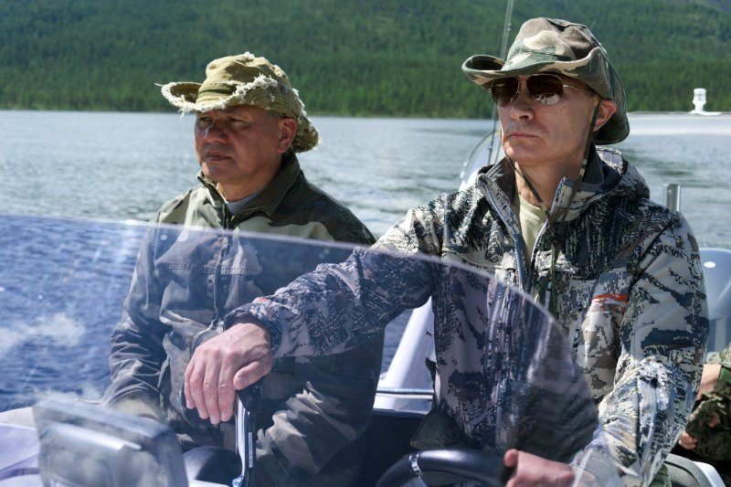

Maria Zakharova stood at a Moscow podium Thursday and said Britain was "one step away" from becoming "legally complicit" in terrorism against Russian civilians, the kind of language the Russian Foreign Ministry usually reserves for adversaries it wants the world to think it might actually strike (Al Jazeera). The trigger was London's decision to let Ukraine build Storm Shadow cruise missiles domestically, a licensing deal France had already signed onto, which Kremlin spokesperson Dmitry Peskov said was adding "fuel to the fire" (The Independent). Manchester Mayor Andy Burnham, in Kyiv this week, gave Peskov's line back to him almost word for word: "Who started the fire? That's the question, isn't it?" (The Independent)
Who started the fire? That's the question, isn't it?
Andy Burnham, Mayor of ManchesterThat public threat sat next to a private one nobody in London or Moscow was supposed to confirm. The CIA had separately warned Russia against attacking NATO territory, a channel that only surfaced because reporters got hold of it, which means Washington's actual risk assessment travels through backchannels, not press briefings (The Guardian). President Trump, asked directly, said he wasn't worried Russia would attack NATO and that his talks with Vladimir Putin had gone well, adding flatly that Putin isn't "going to be" attacking NATO territory (Bloomberg Business). So the agency built to assess threats quietly told Moscow to back off NATO, while the president told Axios he wasn't worried at all — two arms of the same government, reaching the public and Russia through completely different doors (Bloomberg Business).
The gap between those two postures showed up on the ground within hours. Russia launched a nationwide strike overnight hitting ports, grain storage, energy sites and steelworks from Kharkiv to Odesa, killing at least one person and wounding dozens, using the kind of ballistic and hypersonic weapons Ukraine's air force says it downed at a 90% intercept rate for drones (Al Jazeera). And inside Russia, a lieutenant colonel in the Aerospace Forces died when his car exploded outside St. Petersburg, the latest in a string of assassinations of Russian military officials that Moscow has blamed on Kyiv without, in this case, anyone claiming responsibility (Al Jazeera). Former UK defense secretary Grant Shapps put the mismatch plainly: the missile over Hertfordshire isn't the real threat, he said, it's the sabotage and cyberattacks nobody sees coming until after (The Independent).
Zakharova's threat and the CIA's warning are both aimed at the same outcome — keeping this war inside Ukraine's borders — but they can't both be the operating theory of the case for long.
Russia Will Almost Certainly Test Britain Short of Striking It. Moscow's playbook since 2022 runs through cyberattacks, sabotage and hybrid operations before anything resembling a direct hit, and Grant Shapps named that pattern for a reason (The Independent). The most likely next move in the coming two weeks is not a missile over Hertfordshire. It is an unattributed incident against undersea cables, a defense contractor's network, or a logistics hub tied to Storm Shadow production, something Moscow can deny outright the way it labeled the St. Petersburg car bombing a "fire" rather than an assassination. Britain's Ministry of Defence has already committed publicly to standing firm, which means Downing Street now owns the political cost of any response that looks too small next to Zakharova's rhetoric.
That test will land at the exact moment Washington's two signals are hardest to reconcile. Trump telling Axios he isn't worried and the CIA quietly warning Moscow off NATO are not two versions of the same policy. They are a president managing perception and an agency managing risk, and those only stay compatible as long as nothing happens that forces a public choice between them. The most likely trigger is Poland or a Baltic state, not Britain. Grant Shapps said the sabre would be rattled again "over Poland or the Baltics" if London flinches, and Warsaw and the Baltic capitals have spent four years positioning themselves as the tripwire NATO can't ignore. If Russian drones or a cyber intrusion hit Polish or Lithuanian infrastructure in the next two weeks, Trump will face a binary he's avoided: back the CIA's private line, or repeat his public one on camera, in a way that either steadies allies or hands Moscow proof the warning had no teeth.
(https://www.aljazeera.com/news/2026/8/27/russia-warns-it-could-target-uk-in-response-to-kyiv-firing-british-missiles))]
The other near-certainty sits inside Russia, not outside it. The St. Petersburg car bombing was the latest in a pattern Al Jazeera's Moscow correspondent called a series, not an anomaly, and the Kremlin's own choice to log it as a "vehicle fire" rather than open an assassination investigation tells its own story about what Moscow wants domestic audiences to believe versus what its own security services almost certainly know. Expect at least one more unexplained explosion or sudden death involving a mid-to-senior Russian military or defense-industry figure before Sept. 10. Kyiv will neither confirm nor deny it, the same ambiguity it has held since 2022, and that ambiguity is now doing real work: it lets Ukraine bleed Russian command capacity without ever handing Moscow the clean narrative of open war on its own soil that would let Putin justify escalating against NATO territory instead of just threatening to.
The room the CIA's private warning and Zakharova's public one opened is one where both sides are now negotiating through third parties instead of each other — and that changes who gets to shape what happens next.
Storm Shadow's French Twin Becomes the Off-Ramp Nobody Has to Admit Using. France's decision to license the same missile technology to Ukraine, sitting quietly next to Britain's, is the first door this week's combination opened. Zakharova named Britain specifically, not France, even though Peskov's "fuel to the fire" line covered both (The Independent). That's not an oversight. It's a seam. If Moscow wants to escalate against a NATO capital without triggering the collective-defense tripwire Grant Shapps flagged, hitting British assets is a direct hit on the country making the loudest political noise. Leaving France alone lets the Kremlin claim it's punishing a specific policy choice, not attacking NATO as a bloc, which is the exact distinction Trump's "not going to be attacking NATO territory" line depends on to stay true. That gives Paris room nobody's discussed yet: Macron's government could quietly slow-walk its own licensing timeline, not out of fear, but as a bargaining chip, offering Moscow a de-escalation path that costs Britain nothing publicly and lets the Élysée claim credit for restraint London can't afford to claim.
That seam is only visible because the CIA's channel exists at all. Once you accept that Washington is running two tracks, one for cameras and one for Moscow, the next door opens on its own: who else gets read into the quiet track. Poland and the Baltic states have spent four years building the case that they're the tripwire NATO can't ignore, and probabilities already named them as the likeliest trigger point. But a tripwire only works if it knows it's wired in. If the CIA's warning to Russia extended, even informally, to naming Polish or Baltic infrastructure as covered territory, Warsaw would have something Britain currently doesn't: private assurance running parallel to public exposure. That's a door only reachable now, because the warning's existence has already leaked. Poland can ask, on the record or off, whether it's covered, in a way it couldn't a week ago when no one knew the channel existed.
The real Russian threat to this country is not a missile over Hertfordshire.
Grant Shapps, former UK defence secretaryShapps' own framing points to the generative door in the room. If sabotage and cyber operations are the actual battlefield, as he argues, then NATO's most useful move isn't rhetorical solidarity with London. It's building a shared attribution mechanism, one that lets Britain, Poland, and the Baltic states pool evidence on unattributed incidents like undersea cable damage or contractor breaches before Moscow can pick them off one at a time with plausible deniability, the same deniability it used on the St. Petersburg car bombing. That mechanism doesn't exist yet. But the raw material, four years of hybrid incidents nobody's connected publicly, the CIA channel's existence now known, and Shapps naming the pattern out loud, just became combinable in a way it wasn't last week.
The reassurance and the threat can't both be true, and the gap between them is where someone is lying to somebody, on purpose.
Trump Says He Isn't Worried Because Putin "Isn't Going to Attack NATO." That's Not a Fact. That's a Bet He's Making With Other People's Countries. Trump told Axios flatly that Putin won't hit NATO territory, framing it as settled knowledge rather than a guess, the kind of certainty that sounds reassuring right up until it doesn't (Bloomberg Business). The appeal is obvious. A jittery ally wants to hear the war stays contained, and a president who's staked his brand on being the dealmaker who talks to Putin directly wants credit for keeping the peace through personal rapport, not intelligence tradecraft. That's who benefits: Trump gets to be the reason nothing happened, a claim that costs him nothing if he's right and gets buried in noise if he's wrong. But the CIA didn't quietly warn Moscow off NATO because the threat is settled. Agencies don't spend a private channel on a bet that's already won. They spend it because the outcome is live, and somebody in Washington thought Putin needed to hear, away from cameras, that the alliance's defense clause is real (The Guardian). Zakharova wasn't reading from a script that treats NATO as off-limits either. She named Britain specifically, called London "one step away" from complicity in terrorism, and warned of "catastrophic consequences," language calibrated to test exactly how firm the "won't attack NATO" line actually is (Al Jazeera).
This is probably usual sabre-rattling from Russia.
Sir Malcolm Rifkind, former UK foreign secretaryRifkind's own hedge is the tell. Even the voice offering reassurance couldn't drop the "probably." Trump dropped it entirely, on camera, for an audience that includes Moscow. If Putin is weighing whether a strike on British assets triggers a NATO response he can't survive, a public statement from the American president that no such response is coming isn't reassurance. It's information, and it's the wrong kind to be giving away for free. The 2014 Budapest Memorandum days offer the flatter version of this same mistake: assurances made in public, at a podium, tend to get tested by the party they're supposed to deter, not believed by them (Wikipedia). Grant Shapps said the sabre gets rattled more often, not less, when the target flinches. Trump's line isn't a flinch. It's worse: it's telling Moscow where the line is, in a war being decided by whoever moves first through it.
![NTK]()